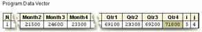

Overview
Introduction
In DATA step programming, you often need to perform the same action on more than one variable. Although you can process variables individually, it is easier to handle them as a group. You can do this by using array processing.
For example, using an array and DO loop, the program below eliminates the need for 365 separate programming statements to convert the daily temperature from Fahrenheit to Celsius for the year.
data work.report (drop=i);
set master.temps;
array daytemp{365} day1-day365;
do i=1 to 365;
daytemp{i}=5*(daytemp{i}-32)/9;
end;
run;
You can use arrays to simplify the code needed to
- perform repetitive calculations
- create many variables that have the same attributes
- read data
- rotate SAS data sets by changing variables to observations or observations to variables
- compare variables
- perform a table lookup
This chapter teaches you how to define an array and how to reference elements of the array in the DATA step.
Objectives
In this chapter, you learn to
- group variables into one- and two-dimensional arrays
- perform an action on array elements
- create new variables with an ARRAY statement
- assign initial values to array elements
- create temporary array elements with an ARRAY statement
Creating One-Dimensional Arrays
Understanding SAS Arrays
A SAS array is a temporary grouping of SAS variables under a single name. An array exists only for the duration of the DATA step.
One reason for using an array is to reduce the number of statements that are required for processing variables. For example, in the DATA step below, the values of seven data set variables are converted from Fahrenheit to Celsius temperatures.
data work.report;
set master.temps;
mon=5*(mon-32)/9;
tue=5*(tue-32)/9;
wed=5*(wed-32)/9;
thr=5*(thr-32)/9;
fri=5*(fri-32)/9;
sat=5*(sat-32)/9;
sun=5*(sun-32)/9;
run;
As you can see, the assignment statements perform the same calculation on each variable in this series of statements. Only the name of the variable changes in each statement.
By grouping the variables into a one-dimensional array, you can process the variables in a DO loop. You use fewer statements, and the DATA step program is more easily modified or corrected.
data work.report(drop=i);
set master.temps;
array wkday{7} mon tue wed thr fri sat sun;
do i=1 to 7;
wkday{i}=5*(wkday{i}-32)/9;
end;
run;
You will learn other uses for arrays in this chapter.
General Form of an Array
To group previously defined data set variables into an array, use an ARRAY statement.
General form, ARRAY statement:
ARRAY array-name{dimension} <elements>;
where
- array-name specifies the name of the array
- dimension describes the number and arrangement of array elements. The default dimension is one
- elements lists the variables to include in the array. Array elements must be either all numeric or all character. If no elements are listed, new variables will be created with default names
| Warning | Do not give an array the same name as a variable in the same DATA step. Also, avoid using the name of a SAS function; the array will be correct, but you won't be able to use the function in the same DATA step, and a warning message will appear in the SAS log |
|---|
| Warning | You cannot use array names in LABEL, FORMAT, DROP, KEEP, or LENGTH statements. Arrays exist only for the duration of the DATA step. They do not become part of the output data set |
|---|
For example, in the data set Finance.Sales91, you might want to process the variables Qtr1, Qtr2, Qtr3, and Qtr4 in the same way.
| Description of Finance.Sales91 | ||
|---|---|---|
| Variable | Type | Length |
| SalesRep | char | 8 |
| Qtr1 | num | 8 |
| Qtr2 | num | 8 |
| Qtr3 | num | 8 |
| Qtr4 | num | 8 |
Specifying the Array Name
To group the variables in the array, first give the array a name. In this example, make the array name sales.
array sales{4} qtr1 qtr2 qtr3 qtr4;
Specifying the Dimension
Following the array name, you must specify the dimension of the array. The dimension describes the number and arrangement of elements in the array. There are several ways to specify the dimension.
- In a one-dimensional array, you can simply specify the number of array elements. The array elements are the existing variables that you want to reference and process elsewhere in the DATA step.
- array sales{4} qtr1 qtr2 qtr3 qtr4;
- The dimension of an array doesn’t have to be the number of array elements. You can
specify a range of values for the dimension when you define the array. For example, you can
define the array sales as follows:
array sales{96:99} totals96 totals97 totals98 totals99; - You can also indicate the dimension of a one-dimensional array by using an asterisk (*).
This way, SAS determines the dimension of the array by counting the number of elements.
array sales{*} qtr1 qtr2 qtr3 qtr4; - Enclose the dimension in either parentheses, braces, or brackets.
- ()
- array sales{4} qtr1 qtr2 qtr3 qtr4;
- []
Specifying Array Elements
When specifying the elements of an array, you can list each variable name that you want to include in the array. When listing elements, separate each element with a space. As with all SAS statements, you end the ARRAY statement with a semicolon (;).
array sales{4} qtr1 qtr2 qtr3 qtr4;
You can also specify array elements as a variable list. Here is an example of an ARRAY statement that groups the variables Qtr1 through Qtr4 into a one-dimensional array, using a variable list.
array sales{4} qtr1-qtr4;
Let's look more closely at array elements that are specified as variable lists.
Variable Lists as Array Elements
You can specify variable lists in the forms shown below. Each type of variable list is explained in more detail following the table.
| Variables | Form |
|---|---|
| a numbered range of variables | Var1-Varn |
| all numeric variables | _NUMERIC_ |
| all character variables | _CHARACTER_ |
| all variables | _ALL_ |
Specifying a Numbered Range of Variables
Qtr1 Qtr2 Qtr3 Qtr4 -> Qtr1-Qtr4
When specifying a numbered range of variables,
- the variables must have the same name except for the last character or characters
- the last character of each variable must be numeric
- the variables must be numbered consecutively
array sales{4} qtr1-qtr4;
In the preceding example, you would use sales{4} to reference Qtr4. However, the index of an array doesn't have to range from one to the number of array elements. You can specify a range of values for the index when you define the array. For example, you can define the array sales as follows:
array sales{96:99} totals96-totals99;
Specifying All Numeric Variables
Amount Rate Term -> _NUMERIC_
_NUMERIC_ specifies all numeric variables that have already been defined in the current DATA step.
array sales{*} _numeric_;
Specifying All Character Variables
FrstName LastName Address -> _CHARACTER_
_CHARACTER_ specifies all character variables that have already been defined in the current DATA step.
array sales{*} _character_;
Specifying All Variables
FrstName LastName Address Amount Rate Term -> _ALL_
_ALL_ specifies all variables of the same type (all character or all numeric) that have been defined in the current DATA step.
array sales{*} _all_;
Referencing Elements of an Array
Now let's look at some ways you can use arrays to process variables in the DATA step.
data work.report(drop=i);
set master.temps;
array wkday{7} mon tue wed thr fri sat sun;
do i=1 to 7;
if wkday{i}>95 then output;
end;
run;
data work.weights(drop=i);
set master.class;
array wt{6} w1-w6;
do i=1 to 6;
wt{i}=wt{i}*2.2;
end;
run;
data work.new(drop=i);
set master.synyms;
array term{9} also1-also9;
do i=1 to 9;
if term{i} ne ' ' then output;
end;
run;
The ability to reference the elements of an array by an index value is what gives arrays their power. Typically, arrays are used with DO loops to process multiple variables and to perform repetitive calculations.
array quarter{4} jan apr jul oct;
do i=1 to 4;
YearGoal=quarter{i}*1.2;
end;
When you define an array in a DATA step, an index value is assigned to each array element. The index values are assigned in the order of the array elements.
1 2 3 4
array quarter{4} jan apr jul oct;
do i=1 to 4;
YearGoal=quarter{i}*1.2;
end;
You use an array reference to perform an action on an array element during execution. To reference an array element in the DATA step, specify the name of the array, followed by an index value enclosed in brackets.
General form, ARRAY reference:
array-name{index value}
where index value
- is enclosed in parentheses, braces, or brackets
- specifies an integer, a numeric variable, or a SAS numeric expression
- is within the lower and upper bounds of the dimension of the array
When used in a DO loop, the index variable of the iterative DO statement can reference each element of the array.
array quarter {4} jan apr jul oct;
do i=1 to 4;
YearGoal=qtr{i}*1.2;
end;
For example, the DO loop above increments the index variable i from the lower bound of the quarter array, 1, to the upper bound, 4. The following sequence illustrates this process:
1
array quarter{4} jan apr jul oct;
do i=1 to 4;
YearGoal=quarter{1}*1.2;
end;
2
array quarter{4} jan apr jul oct;
do i=1 to 4;
YearGoal=quarter{2}*1.2;
end;
3
array quarter{4} jan apr jul oct;
do i=1 to 4;
YearGoal=quarter{3}*1.2;
end;
4
array quarter{4} jan apr jul oct;
do i=1 to 4;
YearGoal=quarter{4}*1.2;
end;
During each iteration of the DO loop, quarter{i} refers to an element of the array quarter in the order listed.
Compilation and Execution
Let's look at another example of a DATA step that contains an array with a DO loop.
The Health Center of a company conducts a fitness class for its employees. Each week, participants are weighed so that they can monitor their progress. The weight data, currently stored in kilograms, needs to be converted to pounds.
| SAS Data Set Hrd.Fitclass | ||||||
|---|---|---|---|---|---|---|
| Name | Weight1 | Weight2 | Weight3 | Weight4 | Weight5 | Weight6 |
| Alicia | 69.6 | 68.9 | 68.8 | 67.4 | 66.0 | 66.2 |
| Betsy | 52.6 | 52.6 | 51.7 | 50.4 | 49.8 | 49.1 |
| Brenda | 68.6 | 67.6 | 67.0 | 66.4 | 65.8 | 65.2 |
| Carl | 67.6 | 66.6 | 66.0 | 65.4 | 64.8 | 64.2 |
| Carmela | 63.6 | 62.5 | 61.9 | 61.4 | 60.8 | 58.2 |
| David | 70.6 | 69.8 | 69.2 | 68.4 | 67.8 | 67.0 |
You can use a DO loop to update the variables Weight1 through Weight6 for each observation in the Hrd.Fitclass data set.
data hrd.convert;
set hrd.fitclass;
array wt{6} weight1-weight6;
do i=1 to 6;
wt{i}=wt{i}*2.2046;
end;
run;
| Note | The wt{i} that appears on the right side of the equal sign (=) is an array reference, not a variable name, so it does not violate the rule against having the same variable and array name in a DATA step. |
|---|
To understand how the DO loop processes the array elements, let's examine the compilation and execution phases of this DATA step.
During compilation, the program data vector is created for the Hrd.Convert data set.
The DATA step is scanned for syntax errors. If there are any syntax errors in the ARRAY statement, they are detected at this time.
The index values of the array elements are assigned. Note that the array name and the array references are not included in the program data vector. The array name and array references exist only for the duration of the DATA step.
During the first iteration of the DATA step, the first observation in Hrd.Fitclass is read into the program data vector.
data hrd.convert;
set hrd.fitclass;
array wt{6} weight1-weight6;
do i=1 to 6;
wt{i}=wt{i}*2.2046;
end;
run;
Because the ARRAY statement is a compile-time only statement, it is ignored during execution. The DO loop is executed next.
During the first iteration of the DO loop, the index variable i is set to 1. As a result, the array reference wt{i} becomes wt{1}. Because wt{1} refers to the first array element, Weight1, the value of Weight1 is converted from kilograms to pounds.
data hrd.convert;
set hrd.fitclass;
array wt{6} weight1-weight6;
do i=1 to 6;
wt{i}=wt{i}*2.2046;
end;
run;

As the DATA step continues its DO loop iterations, the index variable i is changed from 1 to 2, 3, 4, 5, and 6, causing Weight2 through Weight6 to receive new values in the program data vector, as shown below.
Using the DIM Function in an Iterative DO Statement
You can also use the DIM function to return the number of elements in the array. When using DO loops to process arrays, you can use the DIM function in the TO clause of the iterative DO statement. For a one-dimensional array, specify the array name as the argument for the DIM function.
General form, DIM function:
DIM(array-name)
where array-name specifies the array
In this example, dim(wt) returns a value of 6.
data hrd.convert;
set hrd.fitclass;
array wt{*} weight1-weight6;
do i=1 to dim(wt);
wt{i}=wt{i}*2.2046;
end;
run;
When you use the DIM function, you do not have to re-specify the stop value of an iterative DO statement if you change the dimension of the array.
data hrd.convert; data hrd.convert;
set hrd.fitclass; set hrd.fitclass;
array wt{*} weight1-weight6; array wt{*} weight1-weight10;
do i=1 to dim(wt); do i=1 to dim(wt) ;
wt{i}=wt(i)*2.2046; wt{i}=wt{i}*2.2046;
end; end;
run; run;
Expanding Your Use of Arrays
Creating Variables in an ARRAY Statement
So far you have learned several ways to reference existing variables in an ARRAY statement. You can also create variables in an ARRAY statement by omitting the array elements from the statement. Because you are not referencing existing variables, SAS automatically creates the variables for you and assigns default names to them.
General form, ARRAY statement to create new variables:
ARRAY array-name{dimension};
where
- array-name specifies the name of the array
- dimension describes the number and arrangement of array elements. The default dimension is 1
For example, suppose you need to calculate the weight gain or loss from week to week for each member of a fitness class, as shown below.
| SAS Data Set Hrd.Convert | ||||||
|---|---|---|---|---|---|---|
| Name | Weight1 | Weight2 | Weight3 | Weight4 | Weight5 | Weight6 |
| Alicia | 153.4 | 151.9 | 151.7 | 148.6 | 145.5 | 145.9 |
| Betsy | 116.0 | 116.0 | 114.0 | 111.1 | 109.8 | 108.2 |
| Brenda | 151.2 | 149.0 | 147.7 | 146.4 | 145.1 | 143.7 |
| Carl | 149.0 | 146.8 | 145.5 | 144.2 | 142.9 | 141.5 |
| Carmela | 140.2 | 137.8 | 136.5 | 135.4 | 134.0 | 128.3 |
You'd like to create variables that contain this weekly difference. To perform the calculation, you first group the variables Weight1 through Weight6 into an array.
data hrd.diff;
set hrd.convert;
array wt{6} weight1-weight6;
Next, you want to create the new variables to store the differences between the six recorded weights. You can use an additional ARRAY statement without elements to create the new variables.
data hrd.diff;
set hrd.convert;
array wt{6} weight1-weight6;
array WgtDiff{5};
| SAS Data Set Hrd.Convert | ||||||
|---|---|---|---|---|---|---|
| Name | Weight1 | Weight2 | Weight3 | Weight4 | Weight5 | Weight6 |
| Alicia | 153.4 | <- 1 -> 151.9 | <- 2 -> 151.7 | <- 3 -> 148.6 | <- 4 -> 145.5 | <- 5 -> 145.9 |
| Betsy | 116.0 | 116.0 | 114.0 | 111.1 | 109.8 | 108.2 |
| Brenda | 151.2 | 149.0 | 147.7 | 146.4 | 145.1 | 143.7 |
| Carl | 149.0 | 146.8 | 145.5 | 144.2 | 142.9 | 141.5 |
| Carmela | 140.2 | 137.8 | 136.5 | 135.4 | 134.0 | 128.3 |
Remember, when creating variables in an ARRAY statement, you do not need to specify array elements as long as you specify how many elements will be in the array.
array WgtDiff{5};
Creating Default Variable Names
SAS creates default variable names by concatenating the array name and the numbers 1, 2, 3, and so on, up to the array dimension.
| Note | If you prefer, you can specify individual variable names. To specify variable names, you list each name as an element of the array. The following ARRAY statement creates the numeric variables Oct12, Oct19, Oct26, Nov02, and Nov09 |
|---|
array WgtDiff{5} Oct12 Oct19 Oct26 Nov02 Nov09;
Creating Arrays of Character Variables
To create an array of character variables, add a dollar sign ($) after the array dimension.
array firstname{5} $;
By default, all character variables that are created in an ARRAY statement are assigned a length of 8. You can assign your own length by specifying the length after the dollar sign.
array firstname{5} $ 24;
The length that you specify is automatically assigned to all variables that are created by the ARRAY statement.
Using an ARRAY Statement with an Iterative DO Statement
During the compilation of the DATA step, the variables that this ARRAY statement creates are added to the program data vector and are stored in the resulting data set.
data hrd.diff;
set hrd.convert;
array wt{6} Weight1-Weight6;
array WgtDiff{5};
| Warning | When referencing the array elements, be careful not to confuse the array references WgtDiff{1} through WgtDiff{5} (note the braces) with the variable names WgtDiff1 through WgtDiff5. The program data vector below shows the relationship between the array references and the corresponding variable names |
|---|
Now you can use a DO loop to calculate the differences between each of the recorded weights. Notice that each value of WgtDiff{i} is calculated by subtracting wt{i} from wt(i+1). By manipulating the index variable, you can easily reference any array element
data hrd.diff;
set hrd.convert;
array wt{6} weight1-weight6;
array WgtDiff{5};
do i=1 to 5;
wgtdiff{i}=wt{i+1}-wt{i};
end;
run;
A portion of the resulting data set is shown below.
| SAS Data Set Hrd.Diff | |||||
|---|---|---|---|---|---|
| Name | WgtDiff1 | WgtDiff2 | WgtDiff3 | WgtDiff4 | WgtDiff5 |
| Alicia | -1.54322 | -0.22046 | -3.08644 | -3.08644 | 0.44092 |
| Betsy | 0.00000 | -1.98414 | -2.86598 | -1.32276 | -1.54322 |
| Brenda | -2.20460 | -1.32276 | -1.32276 | -1.32276 | -1.32276 |
Assigning Initial Values to Arrays
Sometimes it is useful to assign initial values to elements of an array when you define the array.
array goal{4} g1 g2 g3 g4 (initial values);
Here is an example:
array goal{4} g1 g2 g3 g4 (9000 9300 9600 9900);
To assign initial values in an ARRAY statement,
- place the values after the array elements
- specify one initial value for each corresponding array element
- separate each value with a comma or blank
- enclose the initial values in parentheses
Enclose each character value in quotation marks
array col{3} $ color1-color3 ('red','green','blue');
It's also possible to assign initial values to an array without specifying each array element. The following statement creates the variables Var1, Var2, Var3, and Var4, and assigns them initial values of 1, 2, 3, and 4:
array Var{4} (1 2 3 4);
For this example, assume that you have the task of comparing the actual sales figures in the Finance.Qsales data set to the sales goals for each sales representative at the beginning of the year. The sales goals are not recorded in Finance.Qsales.
| Description of Finance.Qsales | ||
|---|---|---|
| Variable | Type | Length |
| SalesRep | char | 8 |
| Sales1 | num | 8 |
| Sales2 | num | 8 |
| Sales3 | num | 8 |
| Sales4 | num | 8 |
The DATA step below reads the Finance.Qsales data set to create the Finance.Report data set. The ARRAY statement creates an array to process sales data for each quarter.
data finance.report;
set finance.qsales;
array sale{4} sales1-sales4;
To compare the actual sales to the sales goals, you must create the variables for the sales goals and assign values to them.
data finance.report;
set finance.qsales;
array sale{4} sales1-sales4;
array Goal{4} (9000 9300 9600 9900);
A third ARRAY statement creates the variables Achieved1 through Achieved4 to store the comparison of actual sales versus sales goals.
data finance.report;
set finance.qsales;
array sale{4} sales1-sales4;
array Goal{4} (9000 9300 9600 9900);
array Achieved{4};
do i=1 to 4;
achieved{i}=100*sale{i}/goal{i};
end;
run;
A DO loop executes four times to calculate the value of each element of the achieved array (expressed as a percentage).
data finance.report;
set finance.qsales;
array sale{4} sales1-sales4;
array Goal{4} (9000 9300 9600 9900);
array Achieved{4};
do i=1 to 4;
achieved{i}=100*sale{i}/goal{i};
end;
run;
Before submitting this DATA step, you can drop the index variable from the new data set by adding a DROP= option to the DATA statement.
data finance.report(drop=i);
set finance.qsales;
array sale{4} sales1-sales4;
array Goal{4} (9000 9300 9600 9900);
array Achieved{4};
do i=1 to 4;
achieved{i}=100*sale{i}/goal{i};
end;
run;
This is an example of a simple table-lookup program. The resulting data set contains the variables that were read from Finance.Qsales, plus the eight variables that were created with ARRAY statements.
| SAS Data Set Finance.Report | ||||||
|---|---|---|---|---|---|---|
| SalesRep | Sales1 | Sales2 | Sales3 | Sales4 | Goal1 | Goal2 |
| Britt | 8400 | 8800 | 9300 | 9800 | 9000 | 9300 |
| Fruchten | 9500 | 9300 | 9800 | 8900 | 9000 | 9300 |
| Goodyear | 9150 | 9200 | 9650 | 11000 | 9000 | 9300 |
| Goal3 | Goal4 | Achieved1 | Achieved2 | Achieved3 | Achieved4 |
|---|---|---|---|---|---|
| 9600 | 9900 | 93.333 | 94.624 | 96.875 | 98.990 |
| 9600 | 9900 | 105.556 | 100.000 | 102.083 | 89.899 |
| 9600 | 9900 | 101.667 | 98.925 | 100.521 | 111.111 |
| Note | Variables to which initial values are assigned in an ARRAY statement are automatically retained |
|---|
The variables Goal1 through Goal4 should not be stored in the data set, because they are needed only to calculate the values of Achieved1 through Achieved4. The next example shows you how to create temporary array elements.
Creating Temporary Array Elements
To create temporary array elements for DATA step processing without creating new variables, specify _TEMPORARY_ after the array name and dimension.
data finance.report;
set finance.qsales;
array sale{4} sales1-sales4;
array goal{4} _temporary_ (9000 9300 9600 9900);
array Achieved{4};
do i=1 to 4;
achieved{i}=100*sale{i}/goal{i};
end;
run;
Temporary array elements do not appear in the resulting data set.
| SAS Data Set Finance.Report | ||||
|---|---|---|---|---|
| SalesRep | Sales1 | Sales2 | Sales3 | Sales4 |
| Britt | 8400 | 8800 | 9300 | 9800 |
| Fruchten | 9500 | 9300 | 9800 | 8900 |
| Goodyear | 9150 | 9200 | 9650 | 11000 |
| Achieved1 | Achieved2 | Achieved3 | Achieved4 |
|---|---|---|---|
| 93.333 | 94.624 | 96.875 | 98.990 |
| 105.556 | 100.000 | 102.083 | 89.899 |
| 101.667 | 98.925 | 100.521 | 111.111 |
Temporary array elements are useful when the array is needed only to perform a calculation. You can improve performance time by using temporary array elements.
Understanding Multidimensional Arrays
So far you have learned how to group variables into one-dimensional arrays. You can also group variables into table-like structures called multidimensional arrays. This section teaches you how to define and use two-dimensional arrays, which are a common type of multidimensional array.
Suppose you want to write a DATA step to compare responses on a quiz to the correct answers. As long as there is only one correct answer per question, this is a simple one-to-one comparison.
Resp1 -> Answer1
Resp2 -> Answer2
Resp3 -> Answer3
Resp4 -> Answer4
However, if there is more than one correct answer per question, you must compare each response to each possible correct answer in order to determine whether there is a match.
Resp1 -> Answer1 Answer2 Answer3
Resp2 -> Answer4 Answer5 Answer6
Resp3 -> Answer7 Answer8 Answer9
Resp4 -> Answer10 Answer11 Answer12
You can process the above data more easily by grouping the Answer variables into a twodimensional array. Think of a one-dimensional array as a single row of variables, as in this example:
Answer1 Answer2 Answer3 Answer4 ... Answer9 Answer10 Answer11 Answer12
And think of a two-dimensional array as multiple rows of variables, as in this example:
Answer1 Answer2 Answer3
Answer4 Answer5 Answer6
Answer7 Answer8 Answer9
Answer10 Answer11 Answer12
Defining a Multidimensional Array
To define a multidimensional array, you specify the number of elements in each dimension, separated by a comma. This ARRAY statement defines a two-dimensional array:
array new{3,4} x1-x12;
In a two-dimensional array, the two dimensions can be thought of as a table of rows and columns.
array new{r,c} x1-x12;
The first dimension in the ARRAY statement specifies the number of rows.
array new{3,4} x1-x12;

The second dimension specifies the number of columns.
array new{3,4} x1-x12;
You can reference any element of the array by specifying the two dimensions. In the example below, you can perform an action on the variable x7 by specifying the array reference new{2,3}. You can easily locate the array element in the table by finding the row (2), then the column (3).
array new{3,4} x1-x12;
new{2,3}=0;
When you define a two-dimensional array, the array elements are grouped in the order in which they are listed in the ARRAY statement. For example, the array elements x1 through x4 can be thought of as the first row of the table.
array new{3,4} x1 x2 x3 x4 x5 x6 x7 x8 x9 x10 x11 x12;
The elements x5 through x8 become the second row of the table, and so on.
array new{3,4} x1 x2 x3 x4 x5 x6 x7 x8 x9 x10 x11 x12;
Example: Referencing Elements of a Two-Dimensional Array
Multidimensional arrays are typically used with nested DO loops. The next example uses a onedimensional array, a two-dimensional array, and a nested DO loop to restructure a set of variables.
Your company's sales figures are stored by month in the SAS data set Finance.Monthly. Your task is to generate a new data set of quarterly sales rather than monthly sales.
| Description of Finance.Monthly | ||||
|---|---|---|---|---|
| Variable | Type | Length | ||
| Year | num | 8 | ||
| Month1 | num | 8 | ||
| Month2 | num | 8 | ||
| Month3 | num | 8 | ||
| Month4 | num | 8 | ||
| Month5 | num | 8 | ||
| Month6 | num | 8 | ||
| Month7 | num | 8 | ||
| Month8 | num | 8 | ||
| Month9 | num | 8 | ||
| Month10 | num | 8 | ||
| Month11 | num | 8 | ||
| Month12 | num | 8 | ||
| Table Representation: of m Array | ||
|---|---|---|
| Month1 | Month2 | Month3 |
| Month4 | Month5 | Month6 |
| Month7 | Month8 | Month9 |
| Month10 | Month11 | Month12 |
data finance.quarters;
set finance.monthly;
array m{4,3} month1-month12;
Defining the array Qtr{4} creates the numeric variables Qtr1, Qtr2, Qtr3, Qtr4, which will be used to sum the sales for each quarter.
data finance.quarters;
set finance.monthly;
array m{4,3} month1-month12;
array Qtr{4};
A nested DO loop is used to reference the values of the variables Month1 through Month12 and to calculate the values of Qtr1 through Qtr4. Because the variables i and j are used only for loop processing, the DROP= option is used to exclude them from the Finance.Quarters data set.
data finance.quarters(drop=i j);
set finance.monthly;
array m{4,3} month1-month12;
array Qtr{4};
do i=1 to 4;
qtr{i}=0;
do j=1 to 3;
qtr{i}+m{i,j};
end;
end;
run;
Each element in the Qtr array represents the sum of one row in the m array. The number of elements in the Qtr array should match the first dimension of the m array (that is, the number of rows in the m array). The first DO loop executes once for each of the four elements of the Qtr array.
The assignment statement, qtr{i}=0, sets the value of qtr{i} to zero after each iteration of the first DO loop. Without the assignment statement, the values of Qtr1, Qtr2, Qtr3, and Qtr4 would accumulate across iterations of the DATA step due to the qtr{i}+m{i,j} Sum statement within the DO loop.
data finance.quarters(drop=i j);
set finance.monthly;
array m{4,3} month1-month12;
array Qtr{4};
do i=1 to 4;
qtr{i}=0;
do j=1 to 3;
qtr{i}+m{i,j};
end;
end;
run;
The second DO loop executes the same number of times as the second dimension of the m array (that is, the number of columns in each row of the m array).
data finance.quarters(drop=i j);
set finance.monthly;
array m{4,3} month1-month12;
array Qtr{4};
do i=1 to 4;
qtr{i}=0;
do j=1 to 3;
qtr{i}+m{i,j};
end;
end;
run;
To see how the nested DO loop processes these arrays, let's examine the execution of this DATA step.
When this DATA step is compiled, the program data vector is created. The PDV contains the variables Year, Month1 through Month12, and the new variables Qtr1 through Qtr4. (Only the beginning and ending portions of the program data vector are represented here.)
data finance.quarters(drop=i j);
set finance.monthly;
array m{4,3} month1-month12;
array Qtr{4};
do i=1 to 4;
qtr{i}=0;
do j=1 to 3;
qtr{i}+m{i,j};
end;
end;
run;
During the first execution of the DATA step, the values of the first observation of Finance.Monthly are read into the program data vector. When the first DO loop executes the first time, the index variable i is set to 1.
data finance.quarters(drop=i j);
set finance.monthly;
array m{4,3} month1-month12;
array Qtr{4};
> do i=1 to 4; i=1
qtr{i}=0;
do j=1 to 3;
qtr{i}+m{i,j};
end;
end;
run;
During the first iteration of the nested DO loop, the value of Month1, which is referenced by m{i,j}, is added to Qtr1.
data finance.quarters(drop=i j);
set finance.monthly;
array m{4,3} month1-month12;
array Qtr{4};
do i=1 to 4; i=1
qtr{i}=0;
> do j=1 to 3; j=1
qtr{1}+m{1,1};
end;
end;
run;
During the second iteration of the nested DO loop, the value of Month2, which is referenced by m {i,j}, is added to Qtr1.
data finance.quarters(drop=i j);
set finance.monthly;
array m{4,3} month1-month12;
array Qtr{4};
do i=1 to 4; i=1
qtr{i}=0;
> do j=1 to 3; j=2
qtr{1}+m{1,2};
end;
end;
run;
The nested DO loop continues to execute until the index variable j exceeds the stop value, 3. When the nested DO loop completes execution, the total sales for the first quarter, Qtr1, have been computed.
data finance.quarters(drop=i j);
set finance.monthly;
array m{4,3} month1-month12;
array Qtr{4};
do i=1 to 4; i=1
qtr{i}=0;
> do j=1 to 3; j=3
qtr{1}+m{1,3};
end;
end;
run;
The outer DO loop increments i to 2, and the process continues for the array element Qtr2 and the m array elements Month4 through Month6.
data finance.quarters(drop=i j);
set finance.monthly;
array m{4,3} month1-month12;
array Qtr{4};
> do i=1 to 4; i=2
qtr{i}=0;
do j=1 to 3; j=1
qtr{i}+m{i,j};
end;
end;
run;
After the outer DO loop completes execution, the end of the DATA step is reached, and the variable values for the first observation are written to the data set Finance.Quarters.
data finance.quarters(drop=i j);
set finance.monthly;
array m{4,3} month1-month12;
array Qtr{4};
> do i=1 to 4; i=5 (loop ends)
qtr{i}=0;
do j=1 to 3;
qtr{i}+m{i,j};
end;
end;
run;

What you have seen so far represents the first iteration of the DATA step. All observations in the data set Finance.Monthly are processed in the same manner. Below is a portion of the resulting data set, which contains the sales figures grouped by quarters.
| SAS Data Set Finance.Quarters (Partial Listing) | ||||
|---|---|---|---|---|
| Year | Qtr1 | Qtr2 | Qtr3 | Qtr4 |
| 1989 | 69100 | 64400 | 69200 | 71800 |
| 1990 | 73100 | 72000 | 83200 | 82800 |
| 1991 | 73400 | 81800 | 85200 | 87800 |
Additional Features
You've seen a number of uses for arrays, including creating variables, performing repetitive calculations, and performing table lookups. You can also use arrays for rotating (transposing) a SAS data set.
When you rotate a SAS data set, you change variables to observations or observations to variables. For example, suppose you want to rotate the Finance.Funddrive data set to create four output observations from each input observation.
| SAS Data Set Finance.Funddrive | ||||
|---|---|---|---|---|
| LastName | Qtr1 | Qtr2 | Qtr3 | Qtr4 |
| ADAMS | 18 | 18 | 20 | 20 |
| ALEXANDE | 15 | 18 | 15 | 10 |
| APPLE | 25 | 25 | 25 | 25 |
| ARTHUR | 10 | 25 | 20 | 30 |
| AVERY | 15 | 15 | 15 | 15 |
| BAREFOOT | 20 | 20 | 20 | 20 |
| BAUCOM | 25 | 20 | 20 | 30 |
| BLAIR | 10 | 10 | 5 | 10 |
| BLALOCK | 5 | 10 | 10 | 15 |
| BOSTIC | 20 | 25 | 30 | 25 |
| BRADLEY | 12 | 16 | 14 | 18 |
| BRADY | 20 | 20 | 20 | 20 |
| BROWN | 18 | 18 | 18 | 18 |
| BRYANT | 16 | 18 | 20 | 18 |
| BURNETTE | 10 | 10 | 10 | 10 |
| CHEUNG | 30 | 30 | 30 | 30 |
| LEHMAN | 20 | 20 | 20 | 20 |
| VALADEZ | 14 | 18 | 40 | 25 |
The following program rotates the data set and lists the first 16 observations in the new data set.
data work.rotate(drop=qtr1-qtr4);
set finance.funddrive;
array contrib{4} qtr1-qtr4;
do Qtr=1 to 4;
Amount=contrib{qtr};
output;
end;
run;
proc print data=rotate(obs=16) noobs;
run;
| LastName | Qtr | Amount |
|---|---|---|
| ADAMS | 1 | 18 |
| ADAMS | 2 | 18 |
| ADAMS | 3 | 20 |
| ADAMS | 4 | 20 |
| ALEXANDER | 1 | 15 |
| ALEXANDER | 2 | 18 |
| ALEXANDER | 3 | 15 |
| ALEXANDER | 4 | 10 |
| APPLE | 1 | 25 |
| APPLE | 2 | 25 |
| APPLE | 3 | 25 |
| APPLE | 4 | 25 |
| ARTHUR | 1 | 10 |
| ARTHUR | 2 | 25 |
| ARTHUR | 3 | 20 |
| ARTHUR | 4 | 30 |
Summary
Text Summary
Purpose of SAS Arrays
An array is a temporary grouping of variables under a single name. This can reduce the number of statements that are needed to process variables and can simplify the maintenance of DATA step programs.
Defining an Array
To group previously defined data set variables into an array, use an ARRAY statement that specifies the array's name, its dimension enclosed in braces, brackets, or parentheses, and the elements to include. For example: array sales{4} qtr1 qtr2 qtr3 qtr4;
Variable Lists as Array Elements
You can use a variable list to specify array elements. Depending on the form of the variable list, it can specify all numeric or all character variables, or a numbered range of variables.
Referencing Elements of an Array
When you define an array in a DATA step, an index value is assigned to each element. During execution, you can use an array reference to perform actions on specific array elements. When used in a DO loop, for example, the index variable of the iterative DO statement can reference each element of the array.
The DIM Function
When using DO loops to process arrays, you can also use the DIM function in the TO clause of the iterative DO statement. When you use the DIM function, you do not have to re-specify the stop value of a DO statement if you change the dimension of the array.
Creating Variables with the ARRAY Statement
If you don't specify array elements in an ARRAY statement, SAS automatically creates the variables for you by concatenating the array name and the numbers 1, 2, 3... up to the array dimension. To create an array of character variables, add a dollar sign ($) after the array dimension. By default, all character variables that are created with an ARRAY statement are assigned a length of 8. However, you can specify a different length after the dollar sign.
Assigning Initial Values to Arrays
To assign initial values in an ARRAY statement, place the values in parentheses after the array elements, specifying one initial value for each array element and separating each value with a comma or blank. To assign initial values to character variables, enclose each value in quotation marks and separate the values with commas.
Creating Temporary Array Elements
You can create temporary array elements for DATA step processing without creating additional variables. Just specify _TEMPORARY_ after the array name and dimension. This is useful when the array is needed only to perform a calculation.
Multidimensional Arrays
To define a multidimensional array, specify the number of elements in each dimension, separated by a comma. For example, array new{3,4} x1-x12; defines a two-dimensional array, with the first dimension specifying the number of rows (3) and the second dimension specifying the number of columns (4).
Referencing Elements of a Two-Dimensional Array
Multidimensional arrays are typically used with nested DO loops. If a DO loop processes a twodimensional array, you can reference any element within the array by specifying the two dimensions.
Rotating Data Sets
You can use arrays to rotate a data set. Rotating a data set changes variables to observations or observations to variables.
Points to Remember
- A SAS array exists only for the duration of the DATA step.
- Do not give an array the same name as a variable in the same DATA step. Also, avoid using the name of a SAS function as an array name- the array will be correct, but you won't be able to use the function in the same DATA step, and a warning will be written to the SAS log.
- You can indicate the dimension of a one-dimensional array with an asterisk (*) as long as you specify the elements of the array.
- When referencing array elements, be careful not to confuse variable names with the array references. WgtDiff1 through WgtDiff5 is not the same as WgtDiff{1} through WgtDiff{5}.